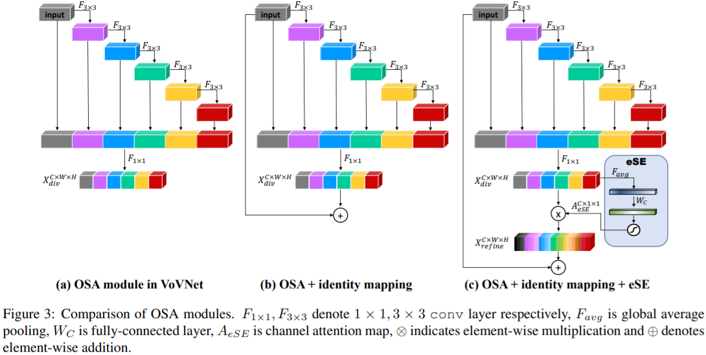

目录
VGG
VGG网络结构参数表如下图所示。

ResNet
ResNet 模型比 VGG 网络具有更少的滤波器数量和更低的复杂性。 比如 Resnet34 的 FLOPs 为 3.6G，仅为 VGG-19 19.6G 的 18%。
注意，论文中算的
FLOPs，把乘加当作1次计算。
ResNet 和 VGG 的网络结构连接对比图，如下图所示。

不同层数的 Resnet 网络参数表如下图所示。

看了后续的
ResNeXt、ResNetv2、Densenet、CSPNet、VOVNet等论文，越发觉得ResNet真的算是Backone领域划时代的工作了，因为它让深层神经网络可以训练，基本解决了深层神经网络训练过程中的梯度消失问题，并给出了系统性的解决方案（两种残差结构），即系统性的让网络变得更“深”了。而让网络变得更“宽”的工作，至今也没有一个公认的最佳方案（Inception、ResNeXt等后续没有广泛应用），难道是因为网络变得“宽”不如“深”更重要，亦或是我们还没有找到一个更有效的方案。
Inceptionv3
常见的一种 Inception Modules 结构如下：

Resnetv2
作者总结出恒等映射形式的快捷连接和预激活对于信号在网络中的顺畅传播至关重要的结论。
ResNeXt
ResNeXt 的卷积block 和 Resnet 对比图如下所示。

ResNeXt 和 Resnet 的模型结构参数对比图如下图所示。

Darknet53
Darknet53 模型结构连接图，如下图所示。

DenseNet
作者
Gao Huang于2018年发表的论文Densely Connected Convolutional Networks。
在密集块（DenseBlock）结构中，每一层都会将前面所有层 concate 后作为输入。DenseBlock（类似于残差块的密集块结构）结构的 3 画法图如下所示：

可以看出 DenseNet 论文更侧重的是 DenseBlock 内各个卷积层之间的密集连接（dense connection）关系，另外两个则是强调每层的输入是前面所有层 feature map 的叠加，反映了 feature map 数量的变化。
CSPNet
CSPDenseNet 的一个阶段是由局部密集块和局部过渡层组成（a partial dense block and a partial transition layer）。

CSP 方法可以减少模型计算量和提高运行速度的同时，还不降低模型的精度，是一种更高效的网络设计方法，同时还能和 Resnet、Densenet、Darknet 等 backbone 结合在一起。
VoVNet
One-Shot Aggregation（只聚集一次）是指 OSA 模块的 concat 操作只进行一次，即只有最后一层($1\times 1$ 卷积)的输入是前面所有层 feature map 的 concat（叠加）。OSA 模块的结构图如图 1(b) 所示。

在 OSA module 中，每一层产生两种连接，一种是通过 conv 和下一层连接，产生 receptive field 更大的 feature map，另一种是和最后的输出层相连，以聚合足够好的特征。通过使用 OSA module，5 层 43 channels 的 DenseNet-40 的 MAC 可以被减少 30%（3.7M -> 2.5M）。
基于 OSA 模块构建的各种 VoVNet 结构参数表如下。

作者认为 DenseNet 用更少的参数与 Flops 而性能却比 ResNet 更好，主要是因为concat 比 add 能保留更多的信息。但是，实际上 DenseNet 却比 ResNet要慢且消耗更多资源。
GPU 的计算效率：
GPU特性是擅长parallel computation，tensor越大，GPU使用效率越高。- 把大的卷积操作拆分成碎片的小操作将不利于
GPU计算。 - 设计
layer数量少的网络是更好的选择。 - 1x1 卷积可以减少计算量，但不利于 GPU 计算。
在 CenterMask 论文提出了 VoVNetv2，其卷积模块结构图如下：

一些结论
- 当卷积层的输入输出通道数相等时，内存访问代价（
MAC）最小。 - 影响 CNN 功耗的主要因素在于内存访问代价 MAC，而不是计算量 FLOPs。
- GPU 擅长并行计算，Tensor 越大，GPU 使用效率越高，把大的卷积操作拆分成碎片的小操作不利于 GPU 计算。
- 1x1 卷积可以减少计算量，但不利于 GPU 计算。
参考资料
VGG/ResNet/Inception/ResNeXt/CSPNet论文- 深度学习论文: An Energy and GPU-Computation Efficient Backbone Network for Object Detection及其PyTorch